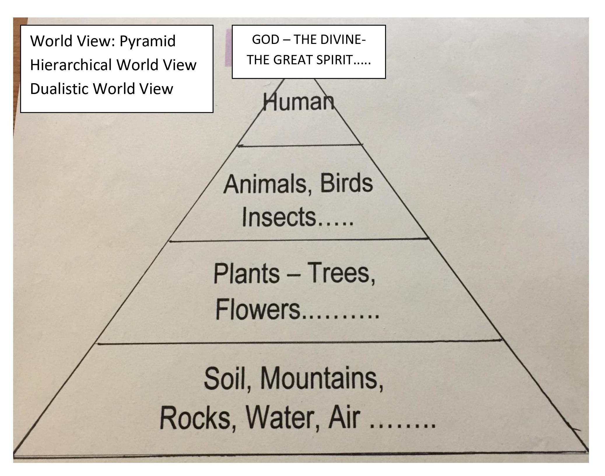
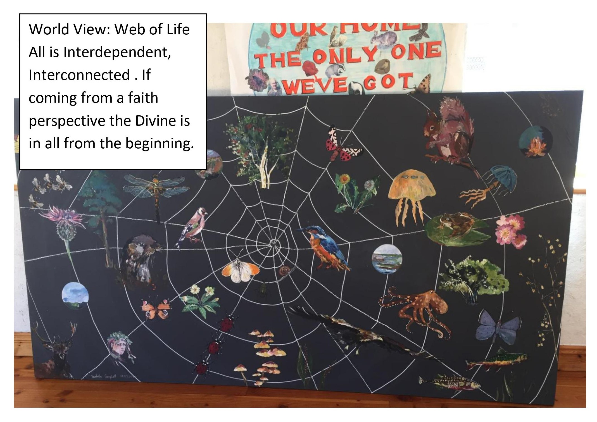

In 1969 Neil Armstrong was the first human to stand on the moon and for the first time humans were able to view Earth from outside.
In 1992 scientist Brian Swimme and cultural historian Thomas Berry co-wrote a book entitled The Universe Story. The book is a detailed description of how the universe began and unfolded for approximately 13 ½ billion years to the present day.
It was the index of this book that inspired this film. It contained a timeline naming each significant moment of the development of the Universe up to the present day. Genesis Farm in New Jersey translated the timeline into the “Cosmic Walk”, where in spiral form one walked the story pausing at the most significant moments in the great story. (See drama in follow-up resources.)
Later Máirín Ní Mhurchú in county Mayo adapted the story to suit Primary Schools and over the years An Gáirdín have been introducing the story to Primary School children. In 2022 three students from the B.A. Digital Arts and Technology Programme in the University of Galway, in collaboration with An Gáirdín created this beautiful film of the story for Primary Schools.
We are the generations experiencing Earth in crisis. We are feeling the negative effects of the great loss of biodiversity and the drastic effects of climate change. We came to this stage because our western world view is a hierarchical and dualistic one – the divine at the top, humans next, animals, insects, plants, land and rock etc.
The Universe Story given to us by science illustrates the Universe and Earth as a great web of life where everything is interconnected and interdependent, where there is no dualism and all is one.

Becoming familiar with The Story of the Universe has the potential to shift us into a new consciousness where we can rediscover our true identity as humans and experience our place among the great diversity of the web of life.